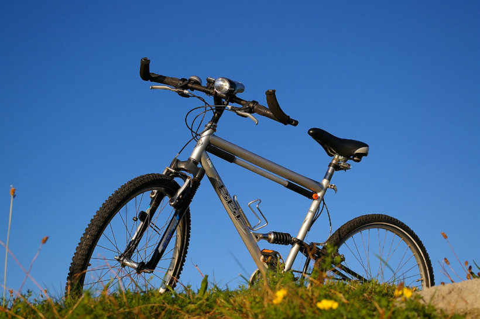
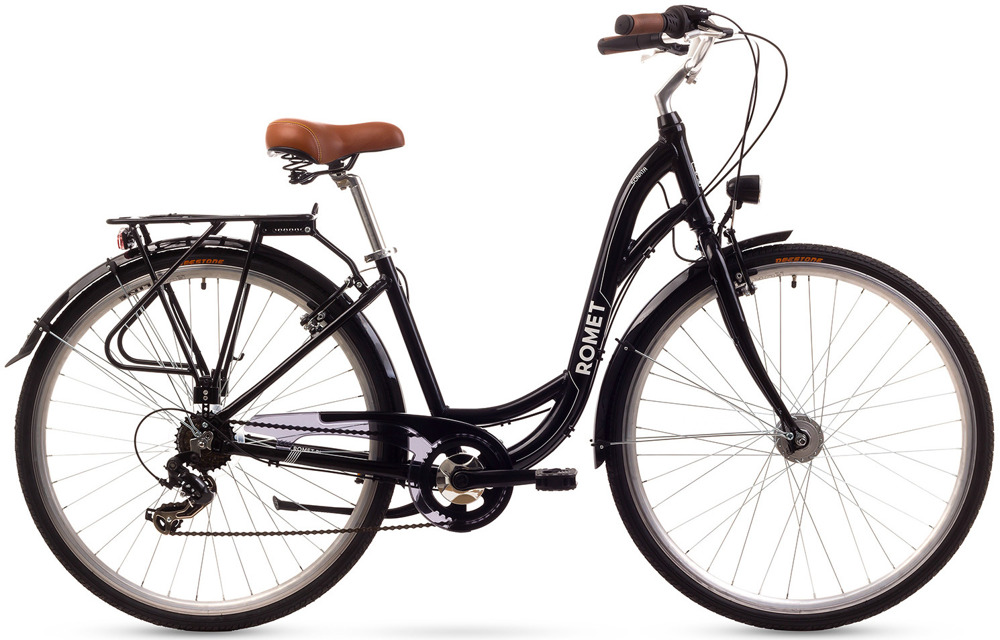
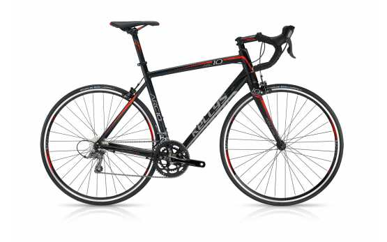
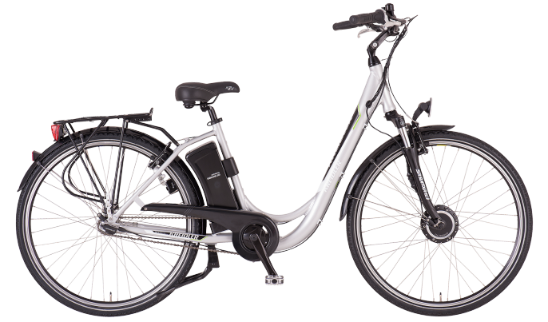

W tym dziale znajdują się wybrane (najpopularniejsze) opisy rodzajów rowerów.
Górski
Miejski
Szosowy
Elektryczny

„Górale” zostały stworzone do jazdy w terenie, poza asfaltowymi drogami. Wyposażone są najczęściej w 26/27.5/29 calowe koła, szerokie opony z agresywnym bieżnikiem oraz jeden lub dwa amortyzatory. Ze względu na swoją wytrzymałość i sporą uniwersalność, stały się niezłym wyborem także do jazdy po mieście.

Rower tencechuje się tym,iż konstrukcja ramy ułatwia wsiadanie, a także powoduje, że siedzi się na nim w pozycji wyprostowanej. Dzięki temu wszystko lepiej widać i nie obciąża się pleców podczas jazdy. Cechą charakterystyczną prawdziwego mieszczucha jest przerzutka planetarna, czyli przerzutka ukryta w piaście tylnego koła. Dzięki niej można zmieniać biegi na postoju, a napęd mniej się brudzi. Rowery miejskie bardzo często wyposażone są w dodatki uprzyjemniające jazdę: oprócz błotników i bagażnika, jest to także koszyk (lub bagażnik) na kierownicy, pełna osłona łańcucha, stopka i oświetlenie.

Rower ten jest przeznaczony do jazdy po asfalcie. Posiada duże, 28 calowe koła, z wąskimi (23-25 mm) i gładkimi oponami. Kierownica (tzw. baranek) w rowerze szosowym jest zagięta w charakterystyczny sposób, umożliwiający zajęcie bardziej aerodynamicznej pozycji. W rowerach szosowych hamuje się oraz zmienia przełożenia, za pomocą klamkomanetek, które umożliwiają wykonywanie obu czynności, bez odrywania rąk od kierownicy. W zależności od geometrii ramy, typowe rowery szosowe można podzielić na dwie grupy: sportowe oraz endurance. Różnią się pozycją zajmowaną za kierownicą. Te drugie umożliwiają bardziej komfortową, turystyczną pozycję i wygodniejsze pokonywanie dłuższych dystansów.

Rowery elektryczne nie są kolejnym wprost rodzajem roweru, a jedynie dodatkiem w postaci silnika elektrycznego oraz akumulatora. Z takim dodatkiem można kupić prkatycznie każdy rodzaj roweru od składaków, przez góskie, aż po miejskie. Według przepisów, taki silnik może pomagać nam podczas jazdy, jedynie do prędkości 25 km/h i dodatkowo samemu trzeba pedałować.